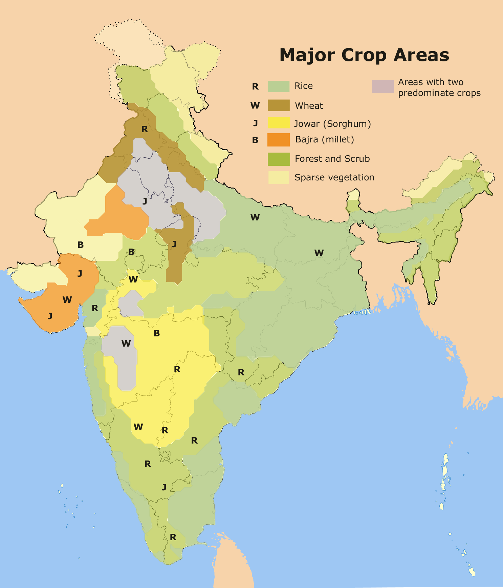

The Indian economy is heavily dependent on agriculture and the livelihood of the Indian farmer largely depends on the Monsoon rains.
If figures are to be believed, 70 per cent of the Indian population depends on farming, either directly or indirectly.
Around 58 per cent of the total employment in the country is through agriculture.
Also, the agricultural sector in our country contributes to around 18 per cent of the GDP.
Southwest Monsoon in India is a four month long affair from June till September.
More than 75 per cent of India’s annual rainfall occurs during this period itself.
The fate of the Kharif crops depend on the performance of the southwest Monsoon.
Good rains during the season result in bountiful crops which further benefit the farmers.
A major portion of the country’s crop area is completely dependent on Monsoon rains as they’re not equipped with methods of manual irrigation.
Simply speaking, the Indian economy gains due to good Monsoon rains in the country.
On the other hand, weak Monsoon rains result in crop failure which affects the economy in a negative manner due to lower production.
Later on, this translates into price-rise, low industrial output, and other issues.
With a population of 1.27 billion India is the world's second most populous country.
It is the seventh largest country in the world with an area of 3.288 million sq kms. It has a long coastline of over 7,500 kms.
India is a diverse country where over 22 major languages and 415 dialects are spoken.
With the highest mountain range in the world, the Himalayas to its North, the Thar desert to its West, the Gangetic delta to its East and the Deccan Plateau in the South, the country is home to vast agro-ecological diversity.
India is the world's largest producer of milk, pulses and jute, and ranks as the second largest producer of rice, wheat, sugarcane, groundnut, vegetables, fruit and cotton.
It is also one of the leading producers of spices, fish, poultry, livestock and plantation crops.
Worth $ 2.1 trillion, India is the world's third largest economy after the US and China.
India's climate varies from humid and dry tropical in the south to temperate alpine in the northern reaches and has a great diversity of ecosystems.
Four out of the 34 global biodiversity hotspots and 15 WWF global 200 eco-regions fall fully or partly within India.
Having only 2.4 percent of the world's land area, India harbours around eight percent of all recorded species, including over 45,000 plant and 91,000 animal species.
India's economic growth in financial year 2018 is expected to accelerate to 6.75 percent in 2018 on improved performance in both industry and services.
India is the world's sixth-largest economy by nominal GDP and the third-largest by purchasing power parity (PPP).
The country ranks 139th in per capita GDP (nominal) with $2,134 and 122nd in per capita GDP (PPP) with $7,783 as of 2018 (World Bank data).
Agriculture accounted for 23% of GDP, and employed 59% of the country's total workforce in 2016.[146]